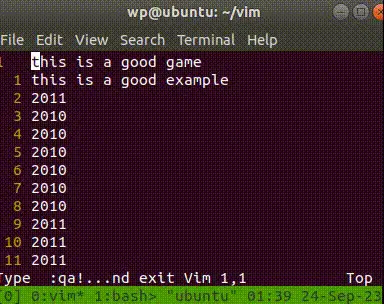
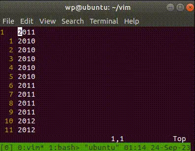
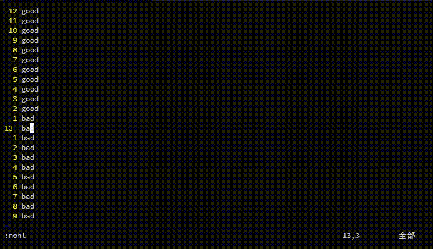
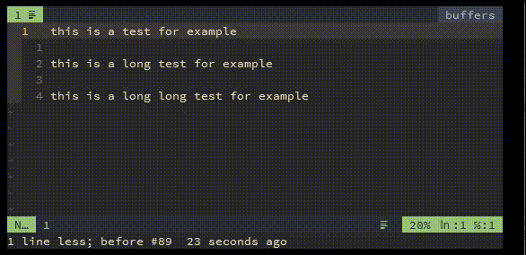
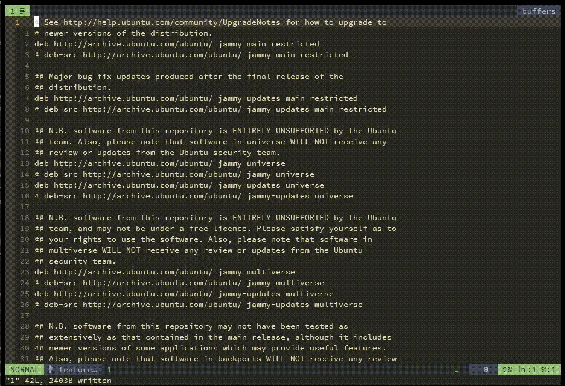
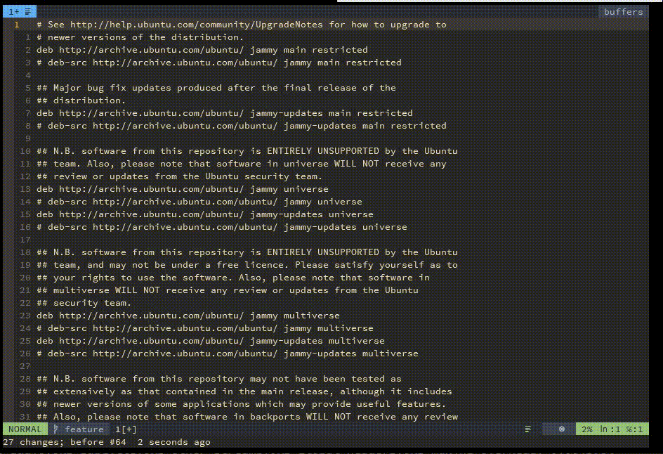
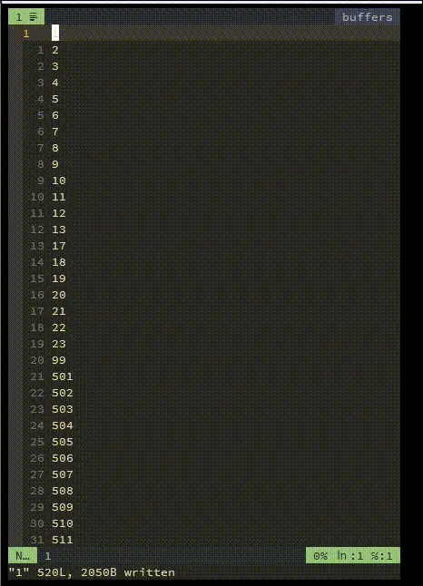
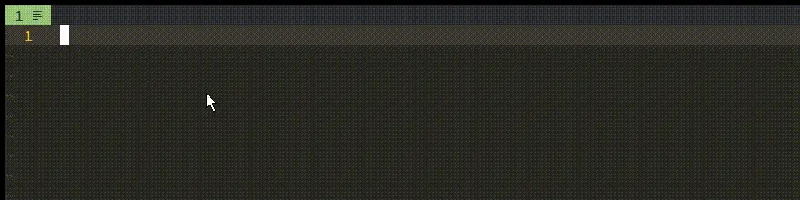
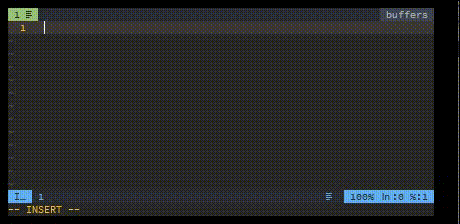

NEOVIM
Table of Contents
- [2024.05.21 Tue 21:02] 同步磁盘中文件的改动
- 在 vim 中使用正则排序
- vim 中默认的标记
- 命令行窗口编辑长命令
- 过滤搜索内容
- 使用 & 替换搜索的单词
- vim 自带的文件管理器
- Vr
- global 命令
- 省略 %s 的第一操作数
- g ctrl+a
- 使用脚本制造输出
- 使用 ctrl+x ctrl+f 补全路径
- vim 可以接受来自管道的内容
- 使用 :smile 看到一个笑脸
- 在 vim 中查找时使用 quickfix 窗口查看所以匹配项
- 超级用户写入文件
- 删除包含某个字符串的行
- Vim 查看变量值
- 为什么不使用 ctrl+c
- C、C++ 的格式化配置
- 查看当前文件类型
- 在 vim 中设置当前目录
- vim-plug 换源
- 好玩的命令
- 与系统剪切板共用
- neovim-roadmap
- basic operation in vim
- Learn Lua in Y minutes: https://learnxinyminutes.com/docs/lua/
:help lsp: nvim_lsp- plugin manager lazy.nvim: https://github.com/folke/lazy.nvim
- kickstart.nvim: https://github.com/nvim-lua/kickstart.nvim
:help lua-guide: https://neovim.io/doc/user/lua-guide.html- lunarvim、starter.lvim、lazyvim、mini.nvim
:help lua、learn vimscript
- basic operation in vim
- LuaJIT: lua compiler, lua_ls,sumneko_lua: lsp server, stylua: formatting lua code
- config neovim
- neovim lsp
- gopls: go language server
- vim.lsp module: neovim’s built-in language service client interface
- nvim-lspconfig: use vim.lsp, start language client
- gopls: go language server
- mason: install language server
- mason-lspconfig: start language server
- nvim-treesitter
- null-ls
- nvim-cmp
- cmp-nvim-lsp
- cmp-buffer
- cmp-path
- cmp-cmdline
- cmp-nvim-lsp
- snippet
- LuaSnip
- cmp_luasnip
- LuaSnip
[2024.05.21 Tue 21:02] 同步磁盘中文件的改动
:e
在 vim 中使用正则排序
:sort r /【.\+】/
vim 中默认的标记
.表示最近编辑的位置0-9表示最近使用的文件^表示最近插入的位置`表示上一次跳转前的位置"表示上一次退出文件的位置[表示上一次修改的开始处]表示上一次修改的结尾处
命令行窗口编辑长命令
使用 q: 、 q/ 以及 q? 来进入命令行窗户，其中 / 和 ? 都是搜索命令。

过滤搜索内容
:vglobal（缩写是v）
该命令是相反的 global，操作不是搜索的内容。

使用 & 替换搜索的单词

vim 自带的文件管理器
:Lex :Sex
Vr

global 命令


省略 %s 的第一操作数

g ctrl+a

使用脚本制造输出
for i in range(10): print(i)
V 选中两行程序，然后按下 ! 输入 python3 就可以得到脚本输出的文本了。
for i in `seq 0 9`; do echo $i done
同理也可以运行 bash 脚本。

使用 ctrl+x ctrl+f 补全路径
vim 可以接受来自管道的内容
ls | vim -
使用 :smile 看到一个笑脸
在 vim 中查找时使用 quickfix 窗口查看所以匹配项
:vim /a/g * :copen
超级用户写入文件
:w !sudo tee % > /dev/null
删除包含某个字符串的行
:g/xxx/d，删除包含xxx的行 :v/xxx/d，删除不含xxx的行 :%s/xxx//gn，统计xxx个数，n表示只报告匹配的个数而不进行实际的替换。
详见「:help :v」或「help :g」
Vim 查看变量值
- $ 访问环境变量；
- & 访问 Vim 选项；
- @ 访问寄存器。
:echo $VIM :echo &sessionoptions
为什么不使用 ctrl+c
ctrl+[ 和 esc 具有完全相同的 ASCII 码值（0x1b），所以这两个键完全一样，而 ctrl+c 是 0x3。
ctrl+c 在 vim 正在执行的时候会中断当前的命令，其他情况下会回到 normal mode。
比如打开一个大的文本文件并进行 syntax 分析（syntax enable）时，使用 ctrl+c 会打断当前的分析并给出一个没有高亮的显示。
C、C++ 的格式化配置
astyle的格式化风格配置：Artistic Style
nnoremap <c-a-\> :Autoformat<CR>
let g:formatdef_custom_js = '"js-beautify -t"'
let g:formatters_javascript = ['custom_js']
func! RunFormatAttach()
" exec "w" " 这2条命令是利用vim外部调用功能, 二选一
" exec "!astyle --mode=c --style=attach -k3 -n -p -S -U -W3 -xg -xW -y -Y %"
" -k3 指针标识 * & ^ 的位置
" -n 不要保留原始文件的备份。原始文件在格式化后会被清除。
" -p 操作符前后加空格
" -S switch 里的 case 都将缩进
" -U 删除括号里多余的空格 ( a + b ) -> (a + b)
" -W3 char& foo3 -> char &foo3
" -xg 逗号后加空格
" -xW 宏定义的缩进
" -y else 单行
" -Y 注释缩进
let g:formatdef_my_fmt = '"astyle --mode=c --style=attach -k3 -n -p -S -U -W3 -xg -xW -y -Y "'
silent exec "Autoformat"
endfunc
let g:formatters_c = ['my_fmt']
let g:formatters_cpp = ['my_fmt']
au filetype c :call RunFormatAttach()
au filetype cpp :call RunFormatAttach()
let g:autoformat_autoindent = 0
let g:autoformat_retab = 0
let g:autoformat_remove_trailing_spaces = 0
上面是 vim-autoformat 插件使用 astyle 的配置。
查看当前文件类型
:set filetype?
在 vim 中设置当前目录
使用 cd 命令更改当前目录：
:cd mydirectory
更改目录为当前打开文件的目录：
:cd %:h
目录上升一级：
:cd ..
更改目录为前一次访问的目录：
:cd -
不知道为什么我配置了
set autochdir，但是通过 :pwd 查看当前目录时，始终是第一个打开的文件的目录，还好更改目录的操作也不是很频繁，所以最后我选择了通过键映射手动更改为当前文件的目录。
nmap <leader>dc :cd %:h<cr>
vim-plug 换源
因为中国地区访问像 github 这种国外网站很不稳定, 所以在一般都是采用镜像网站的方式间接访问. 而 vim-plug 下载时都是用的实际网站, 我们可以修改 plug.vim 来将实际网站变为镜像网站, 提高下载成功率.
在 plug.vim 中搜索 github, 修改两条语句，即可成功下载GitHub资源。
1 将该行 let fmt = get(g:, 'plug_url_format', 'https://git::@github.com/%s.git') 改为 let fmt = get(g:, 'plug_url_format', 'https://git::@hub.fastgit.org/%s.git') 2 将该行 \ '^https://git::@github\.com', 'https://github.com', '') 改为 \ '^https://git::@hub.fastgit\.org', 'https://hub.fastgit.org', '')
好玩的命令
- :ab string strings
例如 ":ab PROC the People's Republic of China" , 当你在文见里插入 PROC 时 the People's Republic of China 就蹦出来了
- :g/^/m0
- 把文件内容反转
- :map keys new_seq
- 定义你当前 键盘命令
与系统剪切板共用
- ubuntu
sudo apt install vim-gonme manjaro
sudo pacman -S gvim